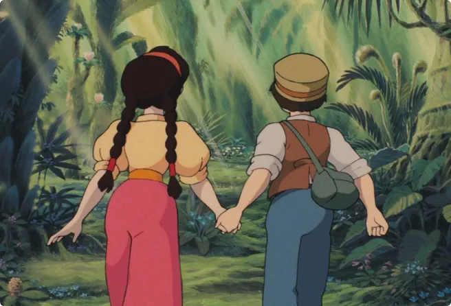

Toujours plus haut, toujours plus loin … Et si on voyageait ?
Le film choisi porte sur l’évolution de l’aviation pendant la Seconde Guerre mondiale.
Alors je suis curieuse de savoir comment ont évolué les moyens de transports et depuis quand certains existent.
Le dirigeable est-il une pure invention?
Souvent présent dans des dessins animés ou dans le manga Les mémoires de Vanitas, cet engin fait rêver.
Mais a-t-il vraiment existé ?
Et oui ! Il a vraiment existé !
Son premier vol à eu lieu en 1852. Ce moyen de locomotion incroyable a parcouru 27 km en ne pouvant se déplacer à plus de 10 km par heure. Inventé après la montgolfière, le dirigeable insensible aux vents se dirige plus facilement que celle-ci. L’appareil a été inventé par Henri Giffard.
Henri Giffard était un chercheur français de la navigation aérienne, passionné par les locomotives. Il est né en 1825 et mort en 1882.

Image de dirigeable
Le dirigeable peut voler grâce à un moteur à vapeur qui entraîne une hélice au centre de l’appareil.
Il reste impressionnant par sa taille car on se demande forcément, comment quelque chose d’aussi gros peut voler ? Mais ça c’est une autre histoire.
Quelle est l’origine de la locomotive ?
L’inventeur du dirigeable étant passionné de locomotives, pourquoi ne pas en savoir plus ?
La locomotive à vapeur est fonctionnelle de 1804 jusque dans les années 1950. Conçue en Angleterre par Richard Trevithick.
La locomotive a été longtemps utilisée dans certains pays où le charbon est peu cher et abondant. Également pour les trajets en montagne pour des raisons de pression atmosphérique.
On peut aussi remarquer que dans les derniers films du réalisateur, des personnages féminins sont mis en avant. Notamment dans Le voyage de Chihiro ou Le Château Ambulant, des héroïnes doivent accomplir des quêtes pour être libres.
Image du film “Le Chateau dans le Ciel”
La première étape d’un des films Ghibli est le voyage, l’individu cherche sa place et souhaite s’ouvrir et découvrir le monde. Malheureusement la société qui l’entoure ne l’accepte pas et finit par le rejeter.
“Tout débute dans un espace fermé, un havre de paix, même si la vie est difficile”
“La majorité de ces communautés vivent leur rapport au monde en privilégiant la fermeture plutôt que l’ouverture. Ce repli évoque très clairement l’histoire du fonctionnement des villages japonais.”
(extrait du livre p232)
Le voyage initié, le protagoniste doit essayer de trouver sa place et de s’intégrer ailleurs. Les personnages doivent faire face à la société et ses multiples obstacles. Dans Le Voyage de Chihiro, Chihiro doit trouver un travail pour sauver ses parents de la malédiction. Mais la vie n’est pas si facile aux bains quand elle va y travailler.
La deuxième étape passée, le voyageur doit ensuite préserver un lien avec la nature. Dans Princesse Mononoké, Ashitaka (le héros) doit retrouver Mononoké pour sauver la forêt et son village des monstres.
L’étape clé qui différencie les films d’Hayao Miyazaki des autres films d’animation est la dimension onirique ajoutée. Cette partie fantastique est présente pour que les personnages puissent accomplir leur quête.
Dans Le Voyage de Chihiro, la jeune fille doit traverser un passage pour rejoindre un monde de spectres. Dans Le vent se lève, Jirô parle à un célèbre ingénieur en aéronautique à travers ses rêves.
Fait insolite
À ses débuts dans l’animation Hayao Miyazaki travaillait en tant que concepteur scénique pour le découpage des épisodes de la série Heidi diffusée en 1974 au Japon. Ce qui est étonnant car Heidi était l’un des premiers dessins animés que je regardais petite !
Il m’avait beaucoup marqué et j’étais étonné de savoir que le réalisateur de mes films d’animation préféré y avait travaillé.
À voir aussi
Nottingham

Vous rêvez de voyager ? Et si on visitait Nottingham et des lieux “jumeaux” de la ville ?
en lire plus"Le vent se lève

Sorti en 2013, ce film d'animation des studios Ghibli témoigne d'une histoire touchante entre un ingénieur et une jeune fille.
en lire plus